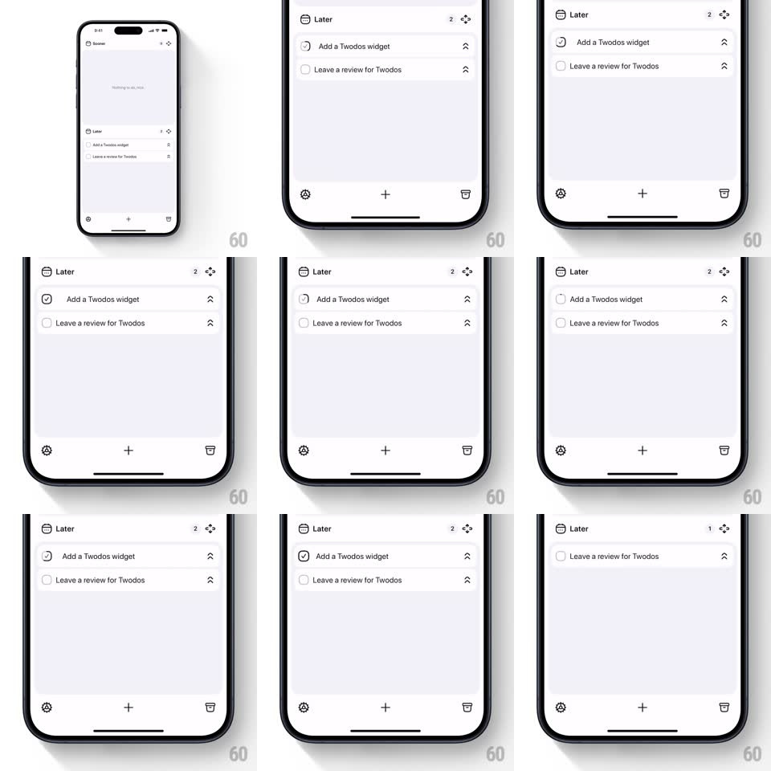

Media
Frame-by-frame

Rebuild this interaction 1:1: Twodos' swipe-to-complete - swiping a to-do row right checks it with a satisfying pop, the row collapses out of the list, and the section's count badge ticks down with a springy bounce.

Rebuild this interaction 1:1: Twodos' swipe-to-complete - swiping a to-do row right checks it with a satisfying pop, the row collapses out of the list, and the section's count badge ticks down with a springy bounce. ## Integration Integration: stack-agnostic spec - springs given as stiffness/damping, timed motions as duration + curve; map every value to your framework and animation library of choice. ## Scene Minimal pale-lavender list: a "Later" section header with a count badge and expand icon, two rows (each: empty circle checkbox, title, chevron), a bottom bar with settings, big +, trash. ## Motion spec Pattern: swipe-check with badge tick-down. - Swipe right on a row: the row tracks the finger 1:1; a checkmark fades in inside the circle as the swipe passes ~60px, scaling 0.5 -> 1 with a spring (~320/18). - Release past ~40% of row width: the row slides out right (200ms, ease-in) while its height collapses to 0 (250ms, ease-in-out) and the rows below slide up into the gap. - Simultaneously the header badge flips 2 -> 1: the digit pops out (scale 1 -> 0.6) and the new digit pops in with overshoot (spring ~400/16, scale 0.6 -> 1.15 -> 1). - Release below threshold: the row springs back flat (~300/20) and the check fades. ## Calibration - The whole gesture resolves in under 600ms - completion must feel instant. - The badge bounce is the reward; keep the overshoot visible. ## Reduced motion Row fades out and collapses; badge swaps without overshoot. ## Don't miss - The checkmark appears progressively WITH the swipe, not only on release - live feedback sells the gesture. - Empty rows leave generous whitespace; nothing reflows abruptly after the collapse.